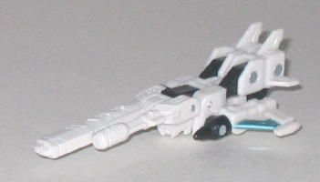
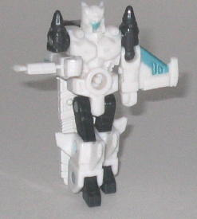
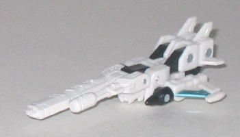
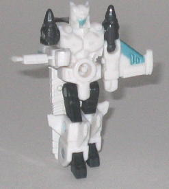
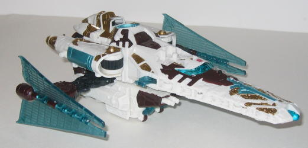
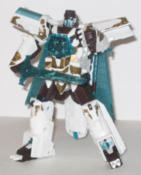

Safeguard
Safeguard
 
Allegiance : Minicon
Size : Mini-Con
Difficulty of Transformation : Very Easy
Color Scheme : White, black, off-white, and some metallic teal
Rating : 6.8
Safeguard


Allegiance
: Minicon
Size
: Mini-Con
Difficulty of Transformation
: Very
Easy
Color Scheme
: White, black, off-white,
and some metallic teal
Rating
: 6.8
Safeguard's vehicle mode
is a flying gun, for lack of a better word. The main body of it looks like
a plane, what with side wings and smaller tail wings, but instead of a
cockpit & nosecone, it's got a bit gun on the front of it. Even though
it may look a bit odd at first, it's a very unique alt mode, and looks
great powerlinked to a larger Transformer, as it gives them an extra gun.
However, I think there's a couple of robot parts sticking out in this mode
that are far too obvious; for one, the robot head is pokes out rather obviously
from under the gun-nosecone if you're looking at the mode from any viewpoint
except directly above. The arms are also very obviously the sides of the
vehicle mode, as the fists and ankle and shoulder joints are definitely
noticeable. The lower arms also don't connect to the main body in this
mode with pegs or anything, which makes the mode feel a little less solid.
Another small complaint is that the gun part is colored a noticeably different
shade of white when compared to Safeguard's otherwise nice white-black-and-teal
color scheme, which is a little distracting. Safeguard's Minicon port is
on the bottom side of this mode, to the rear of center.
Safeguard's robot mode
is pretty cool for a Minicon-- the proportions are very good, and the articulation
is about average for a toy of this size; he can move at the shoulders,
elbows (on ball joints), hips, and knees. Here's also got a very nice,
angular head sculpt, and a detailed body armor-like chest sculpt as well,
though a bit more paint detailing would have spiced it up some. Oddly,
Safeguard has no Minicon symbol that I can find... The "belly button" Minicon
port also looks a little goofy, as well. But still, a nice-looking mode
overall.
Safeguard has an inventive
vehicle mode and a good-looking robot mode, but a few robot extra problems
plague his vehicle mode, knocking down his score a bit. A slightly above-average
Minicon.
 Vector
Prime
Vector
Prime


Allegiance
: Autobot
Size
: Voyager (Mega)
Homeworld
: None
Cyber Key Code
: v38g
Difficulty of Transformation
: Easy
Color Scheme
: White, dark brown,
transparent aqua blue, gold, and some metallic teal, silver, and dull red
Rating
: 9.4
Vector Prime's alternate
mode is a futuristic spacecraft, loosely based on a Star Wars
Sith
Infiltrator
. This mode looks pretty cool, but what catches the eye
most of this toy is the INCREDIBLE amount of detailing that went into it.
Vector Prime is an ancient Transformer, and the guardian of space and time,
and his vehicle mode definitely plays up that aspect a lot. There's gears
molded EVERYWHERE on Vector Prime, from his nosecone to the parts connecting
his wings to his main body to even the sides of the nosecone, where little
gears are molded turning around in cranks in various positions. He's also
got tons of paint detailing-- yes, as you may have heard, he doesn't have
nearly as many paint apps as his Japanese Galaxy Force version, but he's
still got tons. All the gold and brown paint apps on various molded details
make him look even more ancient and regal. The only paint app deduction
on the toy (when compared to the Japanese Galaxy Force version) that I
really don't like is the loss of the brown trim on the wings-- it helped
to make them look more solid than they do without any paint. The wings
are also made of that bendy plastic, so they have a tendency to warp a
little over time. Vector Prime's legs add a little more bulk to the bottomside
of the vehicle mode than I would have liked, but it's not nearly as bad
as many other aerial Transformers, especially since the legs are embellished
with such details as guns on pointing towards the front, as well as a miniature
satellite dish and receiver. Vector Prime's fists also poke out from the
rear end of the vehicle mode rather obviously-- the arm guards cover up
the fists a little, but they're still easy to spit. Vector Prime is also
one of the few Cybertron Transformers to have Powerlinx ports-- he has
one on each side of the back half of the vehicle, as well as one in the
alcove behind the cockpit that's shaped perfectly for Safeguard's vehicle
mode. Unfortunately, the ports are a REALLY tight fit for Safeguard, to
the point where it takes quite a lot of force just to get him off the pegs.
One other gimmick Vector Prime has in this mode is that he has your basic
spring-loaded missile launcher at the very front of the nosecone for a
bit of firepower.
Vector Prime's robot
mode is outstanding with a capital O. It's VERY hard to find any downsides
to this mode. In fact, the only one I can find is that his Cyber Key gimmick
is rather lame-- usually a Key will unlock hidden weapons or something,
but when you insert Vector Prime's key into his lower chest, an odd warbling
sound effect is made and that's it. I guess it's supposed to signify that
he's searching for lost Planet Keys or something with that cool circular
orb-like thing in his chest, but it's still a pretty lame gimmick. The
Key itself is very unique, however-- it's got symbols for all the major
planets in the series on it, as well as a smaller Autobot symbol on the
front and a larger one on the back. The key is largely unpainted, however,
which kind miffs me, as it leaves many of the details on the transparent
plastic hard to see. But otherwise, this mode's pretty much perfect-- the
proportions are spot-on, and the detailing is excellent. He's got a cool
sword (it's made of bendy plastic, but mine hasn't warped much at all yet),
and his vehicle mode "extras" on his back-- namely, his nosecone and his
wings-- look like a flowing cape, further adding to the regal appearance
of Vector Prime. The head sculpt is also excellent, as it looks very similar
to the Autobot symbol, but with a few decorative florishes added. And last
but certainly not least, Vector Prime's articulation is also pretty good-
he can move at the head, shoulders (at two places), elbows, hips (at two
places), knees, and ankles, so you can get him into a pretty good number
of poses.
Vector Prime is an excellent
and very unique transformer, with a ton of mouth-watering detailing and
a very ancient, regal look. His vehicle mode has a few minor problems with
robot extras, but that's about it. Highly recommended-- unless you want
to buy the upcoming
Toys "R" Us Exclusive
"normal-sized" Starscream vs. "same as original version" Vector Prime
,
which you can get for a cheaper price if you wait a little longer.
Review by Beastbot